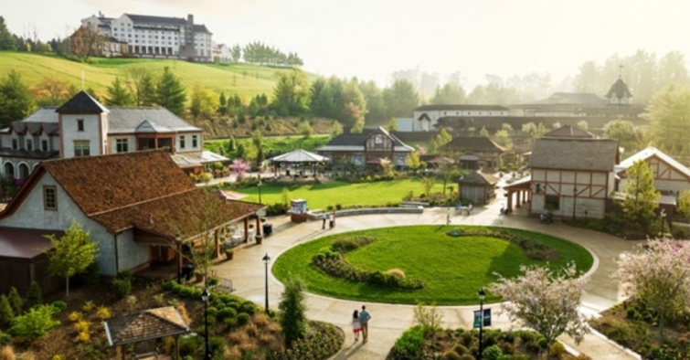
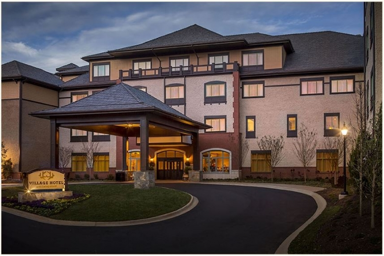

.png)
.PNG)
.PNG)
.PNG)
.PNG)
.PNG)
.JPG)
.JPG)
.PNG)
.PNG)


source
Welcome back! A week or so ago, we looked at the Biltmore Estate, but I never filled you in on the other details of that trip to Asheville, North Carolina. Today I want to share with you where we stayed, a few places to shop there, and a restaurant where we dined. The photo above shows the two hotel options on the Biltmore Estate. (Keep in mind that although both of these are located on the estate itself, they are still a few miles from the mansion.) The hotel pictured at the top of the hill is The Inn on Biltmore Estate. It is a very nice hotel with many amenities, but it was out of our budget for this trip – an extended trip for my husband, my daughter and me where we toured 5 cities scattered throughout the state. The hotel we chose for this trip was the one at the bottom of the photo – the newer (but less expensive) Village Hotel on Biltmore Estate.
source
It is more casual in feel than its big sister on the hill, and I think this one would be an exceptionally good choice for families with children. Here is its comfortable lobby.
The halls have old photographs of the estate framed and scattered throughout the building.
There is an onsite coffee shop just steps away from the lobby.
And this is the dining area across from the coffee shop.
Our room had two beds, a window seat, some built in storage, and a desk. The beautiful and serene view outside the window was of the fields on the estate farm. The bathroom was very nicely appointed, and we will definitely choose to stay here again when we visit Asheville in the future. (My photo turned out too dark, so here is one from their website.)
There are plenty of shopping opportunities on the estate itself. I did not get a chance to tell you in the last Biltmore post about the shops right next to the mansion. Located in the old Biltmore stables, you will find a Christmas shop, a bookshop, a toy shop, a gift shop, a couple of restaurants, and a confectionery. (Of course my photo would be from it! 🙂 )
 But that is not all the shopping there. Our hotel was located right next to Antler Hill Village and Winery. You can tour the winery (with free samples) and shop in several gift shops. You can also tour the barn, view antique farm equipment, and see farm animals there in Antler Hill. It is also where all the outdoor activities begin (biking, Land Rover tours, hiking, horseback riding, and more.)
But that is not all the shopping there. Our hotel was located right next to Antler Hill Village and Winery. You can tour the winery (with free samples) and shop in several gift shops. You can also tour the barn, view antique farm equipment, and see farm animals there in Antler Hill. It is also where all the outdoor activities begin (biking, Land Rover tours, hiking, horseback riding, and more.)
Additionally, there are exhibits to view in the Legacy building. The exhibits change out from year to year, and you can read about the one for 2017 here. (It’s all about movie costumes!) The Vanderbilt and Cecil family wedding veils were on exhibit when we were there, including the one worn by Jacqueline Lee Bouvier for her marriage to future U.S. President John F. Kennedy.

More Biltmore Estate shopping is also available at a few shops at the entrance gate, and then it gets confusing. As you can imagine, the name “Biltmore” seems to be on every possible thing in Asheville. But there is one really good Biltmore shopping experience right across from the estate’s entrance gate: Historic Biltmore Village, a community that was constructed for those working on the Biltmore Estate.

At the center of the village is The Cathedral of All Souls, the church that George Vanderbilt had constructed from 1896-1905 for parishioners who lived in the village.

The homes were constructed in the Tudor architectural style. There is a good article with the timeline of the construction of Biltmore Village here.


There is also a hotel in this village…The Grand Bohemian Hotel (the same line of hotels in which we stayed in Celebration, Florida.) This would be another good choice when visiting the Biltmore Estate (but there is no self parking there, and I believe they do not offer a free shuttle to the Biltmore House like the Village Hotel does.)

It has quite a lobby!

Across the street there are even more stores…from Chico’s, J Crew, and Talbots to Williams Sonoma and a whole host of local shops.
Obviously, this is only one small section of shopping in Asheville. We also explored the downtown area, and there are a number of other interesting districts to visit as well, but to me, the best part of visiting Asheville is its restaurants. It is really a “foodie town.” Before we checked into our hotel, we stopped for Sunday brunch at The Market Place Restaurant located right in the historic downtown area.

Although the food was good, I believe there are many other equally good (if not better) places to try in a town filled with great restaurants. After that meal, we decided to go on a mission to sample a variety of barbeques in the city. (Such a tough job! 🙂 ) And that will be the topic of my next Travel Talk post. I hope you will be back for it!
Until next time..


.PNG)
Is the Inn worth it? In other words, what perks go away when you stay at this other property? We are celebrating our 30th and want to splurge a bit…but, don’t know if we would be just as happy where you all stayed. Can you walk to the winery from here? We like to do a lot of walking…Forgive if this is a duplicate comment…not sure if you are moderating and I don’t see mine from yesterday. Thank you so much! Your blog is divine!
———————————————————————-
Hi Laura! Thank you for your compliment on the blog. Your earlier comment is about 6 up from the bottom. I answered your walking distance and shuttle questions earlier today and also sent you an email with the answer. Please check your spam to make sure it did not go to it. 🙂 As far as the inn being worth it, it really depends on what you want. With it you do get a more “luxury” experience, and I believe the rooms are larger. Here is what it offers that the hotel does not: valet parking, a bellman, 24 hour concierge service, 24 hour room service, fine dining (only casual at the hotel)an on-site spa (hotel guests are also given access to it, but it is not onsite) floral services, in-room movies, custom bathrobe and slippers, a shoe shine service, nightly turn down service, live piano and jazz. The hotel is much closer to Antler Hill Village (right beside it in fact) and they don’t advertise the inn as walkable to the winery…not sure why. It is the building at the top of the top photo on this post, and Antler Hill Village is at the bottom of the photo. It doesn’t look all that far, but I don’t think you can just walk down the hill. The hotel has a long driveway back to the road.That must be why they don’t say it is walking distance to the winery and village. If you want a true luxury experience, then I think the inn would be your choice. There is a much more casual atmosphere at the hotel.
Kelly
I’m ready for a trip back as well! Our focus on previous visit was the Biltmore, and didn’t take the time to enjoy Ashveille. I enjoy your “travel logs” –very detailed with information, including great places to eat, stay, sites to see.
——————————————————————–
Yes, I can understand how your focus would be on the Biltmore…so much to see there! But Asheville deserves a lot of time and attention as well. I hope you get to make a return visit there Kristy. 🙂 Thank you for the compliment on the travel posts…not sure everyone is a fan of them, but they are like journal entries for me so that I can remember the trips. 🙂
Kelly
Kelly,
I love seeing this area via your photos and sources. I love the shopping area that is on Biltmore and our favorite restaurant there is called Cedric’s Tavern. They serve the most delicious house made pickles! I also like the historic story that goes with the Tavern. Thanks for sharing!
Dawn
———————————————————————–
We knew Cedric’s was supposed to be very good, but we did not get a chance to dine there. Hopefully, we will make a week long trip back to Asheville and will enjoy it then. I love pickles, so that sounds great!
Kelly
Now, I want to go back to Asheville! I haven’t been in years. I love all the old historical photographs in the hotel. 🙂
———————————————————————
Yes, you need to go back Gina. The restaurant scene has really exploded in the last few years. So it is worth a trip back just for the food! 🙂
Kelly
Simply wonderful. I think this is on my bucket list.
——————————————————————–
Good Jo Anne! It is a beautiful and fun place to visit. 🙂
Kelly
Great post! It is fun to see posts when you are in our back door! A fun place to eat in Biltmore Village is Corner Kitchen. (It is right across the street from the Well Bred Bakery.) My husband and I just ate there on Wednesday. You would love the reuben and Joe’s chips. Also, when you return you MUST go to tea at the Inn on Biltmore. The tiers of sweets are unbelievably beautiful and delicious! YOU would be in heaven!
——————————————————————–
Yes, most definitely at your “back door.” 🙂 I have heard several recommendations for Corner Kitchen. Unfortunately we had just finished a barbecue lunch when we were in the village, so we did not eat there. Adding it to the list for a future trip. 🙂 The sandwich and chips sound great! Not sure I could get my husband to go to the tea at the inn, but I could certainly talk my daughter into it. Our kind of food for sure!!
Kelly
Kelly, this is so beautiful. My husband and I are planning a trip in late September. Can’t wait for the rest of the tour.
——————————————————————–
Oh how fun! You are going to just love it there Linda! It is a very beautiful place. 🙂
Kelly
Kelly, lovely town. Always fun to travel with you. T
——————————————————————
Yes, Asheville is beautiful! Glad you enjoyed the virtual trip! 🙂
Kelly
Could you walk to the winery from where you stayed? And was there a shuttle to the estate? Thank you!
——————————————————————-
Yes, it was a VERY easy walk from the hotel to the winery and also to the shops in Antler Hill Village. And yes, the hotel ran shuttles all day to and from the estate. So nice to not have to worry about parking there. 🙂
Kelly
What a lovely trip! It has been many years since we have visited Biltmore Estates. I wonder if they still have the Biltmore Dairy. Their ice cream was so delicious and the atmosphere was really beautiful. I hope 2017 is filled with many traveling adventures for you to share 📷📷📷
——————————————————————-
Thank you Leigh. Unfortunately, the dairy has closed down and that division sold (to Pet I think.) The Dairy Bar is no longer in existence either, but there is a “creamery” (ice cream shop) next to the estate, and the vanilla ice cream is made from their original ice cream recipe. That is about as close as it gets to the beloved Biltmore Dairy products today.
Kelly
What an amazing place. That lobby in the Grand Bohemian Hotel! Wow. I’d love that fireplace and chandelier.
Thanks for sharing.
xo,
Karen
——————————————————————-
Wasn’t that fireplace UNREAL?! I would love to tour that hotel. It sits in a great location too! Like I always tell you, you need to plan a trip over to this side of our country one day. 🙂
Happy Friday!
Kelly
Kelly,
This is a fun post and places that are familiar to me. This needs to b
the year I buy a season ticket to Biltmore. Sounds like a good
Valentine gift to myself.
Have a great weekend!
DiAnne
——————————————————————–
That sounds like a great idea DiAnne! If we lived closer I would do the same. Our daughter wants to eventually move to Asheville, so perhaps we will have a need for that season ticket ourselves one day. 🙂
Kelly
Hi Kelly! My favorite restaurant is Rhubarb in downtown Asheville. The duck confit is outstanding! The Eating Asheville tour is a great way to check out the food in this delicious town.
—————————————————————
That tour sounds like a wonderful thing to do!!! Asheville has amazing restaurants. We even commented we could stay a month and still not check out all the good ones! We will have to try out Rhubarb on our next visit there. Thank you for the recommendation!
Kelly
Hey Kelly: So glad you had a good time visiting my fair city!! I’ll be interested in seeing your next post about local eateries. My favorites are not necessarily the downtown places. There is plenty of food here, for sure!!
———————————————————————
Your fair city is FABULOUS Debbie! I could eat eat and eat there (and shop and shop and shop!)
Happy Friday!
Kelly